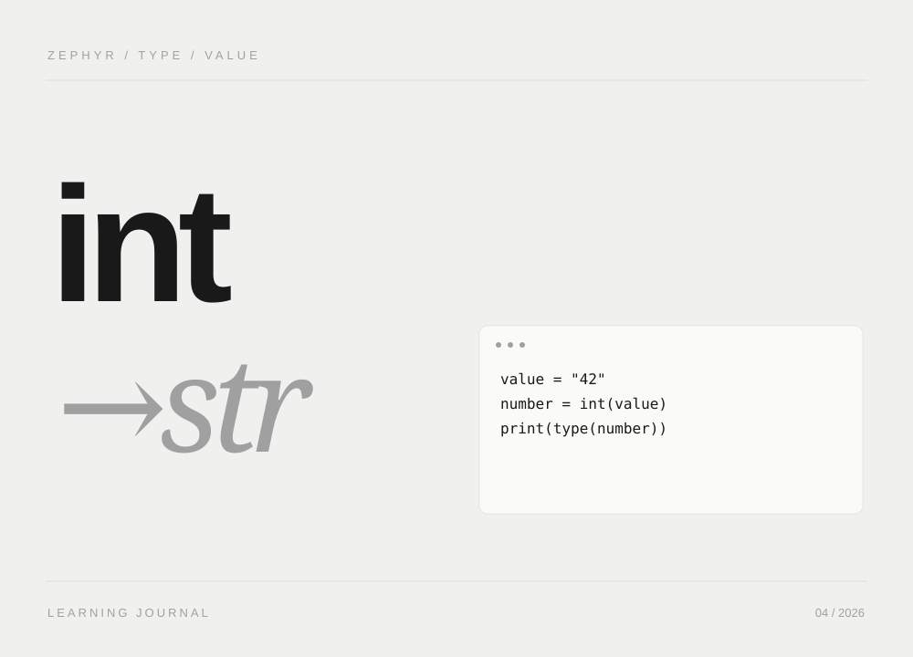
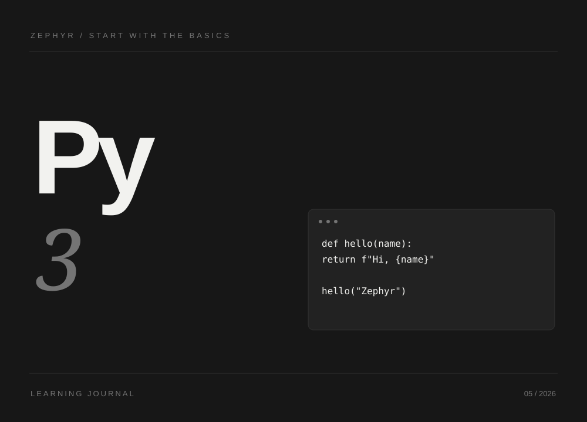
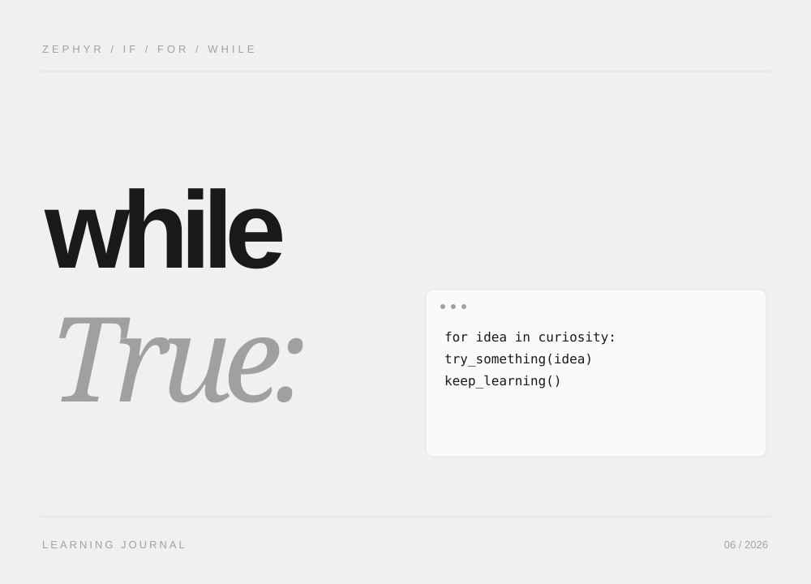

HTML5 入门笔记：从网页结构到常用功能
学习前端开发，首先需要理解网页是怎样组织起来的。一篇文章的标题、导航、图片、视频和表单，都需要通过 HTML 描述。这篇笔记从基础文档结构出发，介绍 HTML5 的常用能力，并通过简单示例说明它们的使…
本站可读全文
THE WRITING DESK
前端、Python、后端与 AI。把学习中的问题，整理成可以再次翻开的记录。
学习前端开发，首先需要理解网页是怎样组织起来的。一篇文章的标题、导航、图片、视频和表单，都需要通过 HTML 描述。这篇笔记从基础文档结构出发，介绍 HTML5 的常用能力，并通过简单示例说明它们的使…


读到这里，你可能会想：“道理我都懂，然后呢？第一，别囤工具，先把一个用熟。挑一个语言 AI（比如你正在用的豆包），连续用它解决你真实工作里的 10 件事，比看 100 篇教程都管用。第二，AI 的答案…

类型转换函数的"安静失败"是最危险的 bug 源：它不报错，只是给你一个不对的答案。隐式转换是它给你的礼物，显式转换是它给你的考卷——考的不是函数名背得熟不熟，而是你对"数据在流动时会不会丢东西"有没…

数据结构的学习不能停留在"会调 API"的层面。append和extend的区别、字典为什么不能用列表当键、集合为什么能去重——这些问题的背后都是计算机底层的设计思想。接下来我打算多做几道综合练习题，…

的程序员，刚接触Python的缩进语法可能会有点“水土不服”，但只要你熬过这几天的肌肉记忆重塑期，你会发现这种强制缩进其实让代码看起来清爽多了。C++的 for 循环通常用于计数，而Python的 f…
换一个关键词，或者看看全部文章。